Directional statistics
Maximiliano Garnier-Villarreal
2026-05-22
Source:vignettes/directional_stats_vig.Rmd
directional_stats_vig.RmdThis document highlights some functions of the GMisc
package related to directional statistics and stereonets.
Directional data refers to anything that can be expressed in azimuths, with the typical convention of the north corresponding to 0 and 360 degrees, and increasing clockwise (east is 90, south is 180, west is 270).
Another characteristic of this type of data is that it can fall in one of the following categories:
- Directional: Has a specific orientation (direction), points in one direction, usually associated to lines. An example would be the pole of a plane.
- Non-directional: Does not have a specific orientation, points in two directions 180 degrees one from the other, usually associated with planes. An example would be the strike of a plane.
Circular data
Circular data, also known as 2D, refers to data only defined by their direction and not their inclination or dip, so only one set of measurements is needed.
In this case, to perform proper statistics on non-directional data it is necessary to transform it before applying any calculations. It is a simple transformation by doubling each measurement, this way it goes from non-directional to directional, and now all the statistics can be applied.
Basic stats
The main statistics that describe circular data are the mean direction (\bar{\theta}), mean resultant length (\bar{R}), and circular variance (s_0^2). The mean resultant length (\bar{R}) ranges between 0 and 1, and the closer to 1 the more concentrated are the data and the closer to 0 the more dispersed is the data. The circular variance (s_0^2) is the complement of the mean resultant length (\bar{R}) and its interpretation is the opposite, the closer to 1 the more variation there is in the data.
The function dir_stats_circ is used to obtain the basic
statistics for circular data. Its arguments are x a vector
of angular measurements in degrees, dir a switch to
indicate if the data is directional (1) or non-directional (0), and
conf.level to determine the desired confidence level. The
result shows the statistics mentioned above, plus the concentration
parameter kappa (k), and the general
width for the cone of confidence. The concentration parameter (k) is another measure of the dispersion, the
higher it is the more concentrated (less dispersed) is the data, and
more likely to have a preferred mean direction.
The first example shows a set of directional data, while the second example shows a set of non-directional data.
x <- c(
255,
239,
222,
231,
199,
271,
222,
274,
228,
246,
177,
199,
257,
201,
237,
209,
216
)
dir_stats_circ(x, dir = 1)
#> theta.hat N R Rbar circ.var circ.sd circ.disp kappa cone
#> 1 228.4 17 15.29 0.8996 0.1004 0.46 0.2205 5.271 12.61
dir_stats_circ(carolina, dir = 0)
#> theta.hat N R Rbar circ.var circ.sd circ.disp kappa cone
#> 1 48.7 99 97.25 0.9823 0.0177 0.189 0.03541 28.5 1.07Rose diagram
The typical way to present directional data is with a rose diagram, which is the equivalent of a histogram. In the case of directional data it results in an asymmetric rose diagram, while in the case of non-directional data it results in a symmetric rose diagram.
The function to plot this is rose_diag_2D, with the
extra argument of width for the width in degrees of the
petals (bins). The plot shows the data, and by thedault the mean
direction in red.
rose_diag_circ(x, width = 30, dir = 1)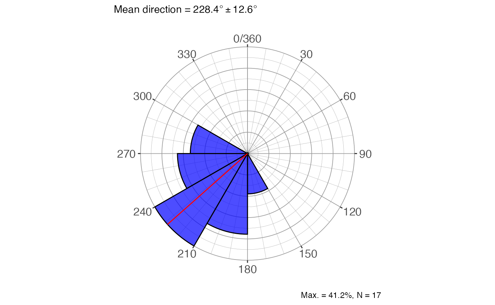
rose_diag_circ(carolina, width = 10, dir = 0)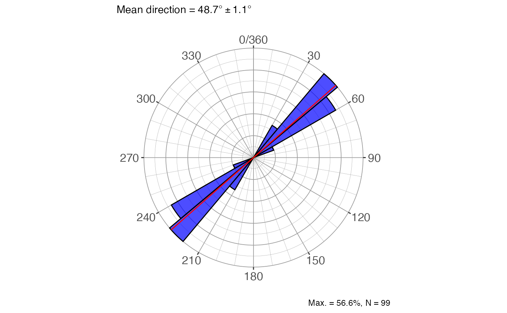
Two-sample test
This is the homologous to the 2-sample t-test, where two
sets of data are compared to determine if they have the same mean, but
in this case it refers to the mean direction. The function is
dir_2sample_test_circ, with the usual arguments with the
addition of a second vector of measurements. The test is an
F-test, comparing the critical value with the estimated value.
The result gives the F-statistics, the p-value and an
interpretation.
y = c(
225,
208,
172,
198,
204,
183,
190,
212,
247,
127,
167,
234,
217,
192,
212,
171,
169,
210,
245,
222,
185,
227,
193,
178,
187,
182,
194,
217,
168,
211,
234,
204,
221,
198,
261,
228,
146,
201,
146,
231
)
dir_2sample_test_circ(x, y, dir = 1, conf.level = 0.95)
#> $f
#> [1] 11.45
#>
#> $fcrit
#> [1] 4.02
#>
#> $df1
#> [1] 1
#>
#> $df2
#> [1] 55
#>
#> $p_value
#> [1] 0.00133
#>
#> $interpretation
#> [1] "Reject H0 and conclude that the two samples could not come from the same population with the same mean direction"Other functions are available from other packages like
Directional, circular and
CircStats, including tests for randomness, uniformity, and
multiple samples, but they are not included in this vignette.
Spherical data
Spherical data refers to data represented by two vectors: dip
direction (strike, trend) and dip angle (plunge). All of the statistics
and test done in circular data are extended to spherical data, so the
functions just change the last part of the name. The spherical data
includes directed (vector) and undirected (axial) data, with axial data
being either bi-polar or girdle. By default, the functions assume that
the data is directed (vector, trend/plunge), but with the
type argument should be specified if otherwise. The
interpretation of the results changes depending on the type of data, so
it is important to specify it correctly.
Basic stats
The main function, dir_stats_spher, has the same
arguments as dir_stats_circ but with the addition of the
plunge vector for the plunge/dip angles, as well as the
type argument for the type of data being provided. The
output are the eigenvalues and eigenvectors, the orientation matrix, the
trend/plunge and dir/dip of the mean directions, the summary for
directed (vector) and undirected (axial) data, depending on the case,
and the summary for Point-Girdle-Randon characterization. Additionally,
the plots for eigenvalues, pgr characterization, and the data plotted in
a stereonet with the chosen summary stats.
trds = c(12, 18, 22, 15, 10, 20)
plgs = c(42, 40, 48, 30, 42, 30)
dir_stats_spher(trds, plgs, conf.level = 0.95, type = 'line')
#> $eigen_values
#> V1 V2 V3
#> lambda 5.9020 0.0799 0.0181
#> S 0.9837 0.0133 0.0030
#>
#> $eigen_vectors
#> V1 V2 V3
#> x 0.7491359 -0.5903778 -0.30041565
#> y 0.2167973 -0.2100226 0.95335692
#> z 0.6259348 0.7793232 0.02934318
#>
#> $orientation_matrix
#> [,1] [,2] [,3]
#> [1,] 3.3417213 0.9632761 2.7306143
#> [2,] 0.9632761 0.2973670 0.7883442
#> [3,] 2.7306143 0.7883442 2.3609117
#>
#> $trend_plunge
#> V1 V2 V3
#> trd 16.14 199.58 107.49
#> plg 38.75 51.20 1.68
#>
#> $dir_dip
#> V1 V2 V3
#> dir 196.14 19.58 287.49
#> dip 51.25 38.80 88.32
#>
#> $vector_stats
#> # A tibble: 1 × 13
#> trd plg strike dir dip R Rbar kappa cone N x y z
#> <dbl> <dbl> <dbl> <dbl> <dbl> <dbl> <dbl> <dbl> <dbl> <int> <dbl> <dbl> <dbl>
#> 1 16.2 38.7 106. 196. 51.3 5.95 0.992 84.6 6.68 6 0.749 0.217 0.626
#>
#> $axis_stats_watson
#> # A tibble: 1 × 5
#> V1_cone V2_cone V3_cone kappa_bipolar kappa_girdle
#> <dbl> <dbl> <dbl> <dbl> <dbl>
#> 1 5.27 4.77 0 61.6 -166.
#>
#> $axis_stats_aniso
#> V1 V2 V3
#> bingham kappa 0.000 -37.558 -165.838
#> watson max ellipse 6.737 39.133 38.980
#> watson min ellipse 3.178 5.900 2.860
#>
#> $PointGirdleRandom
#> # A tibble: 1 × 13
#> P G R B I D K C s1.s2 s1.s3 s2.s3 r1
#> <dbl> <dbl> <dbl> <dbl> <dbl> <dbl> <dbl> <dbl> <dbl> <dbl> <dbl> <dbl>
#> 1 0.970 0.0206 0.00904 0.991 4.76 0.976 2.90 5.79 73.9 326. 4.42 1.49
#> # ℹ 1 more variable: r2 <dbl>
#>
#> $eigenplot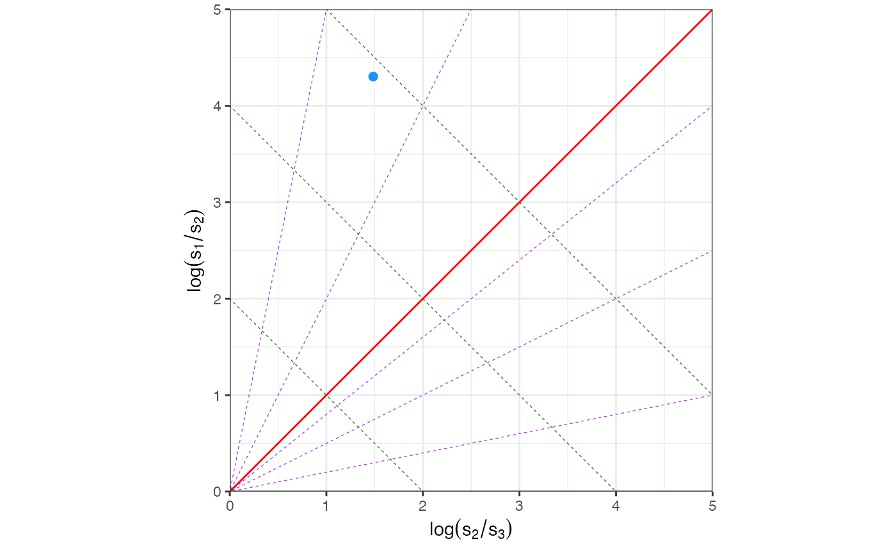
#>
#> $pgrplot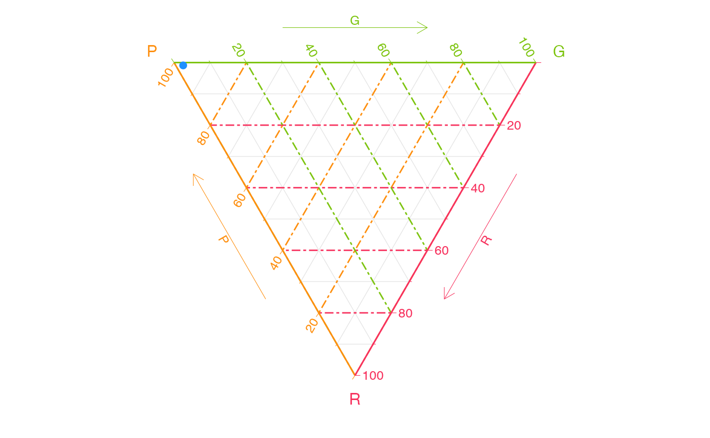
#>
#> $stereoplot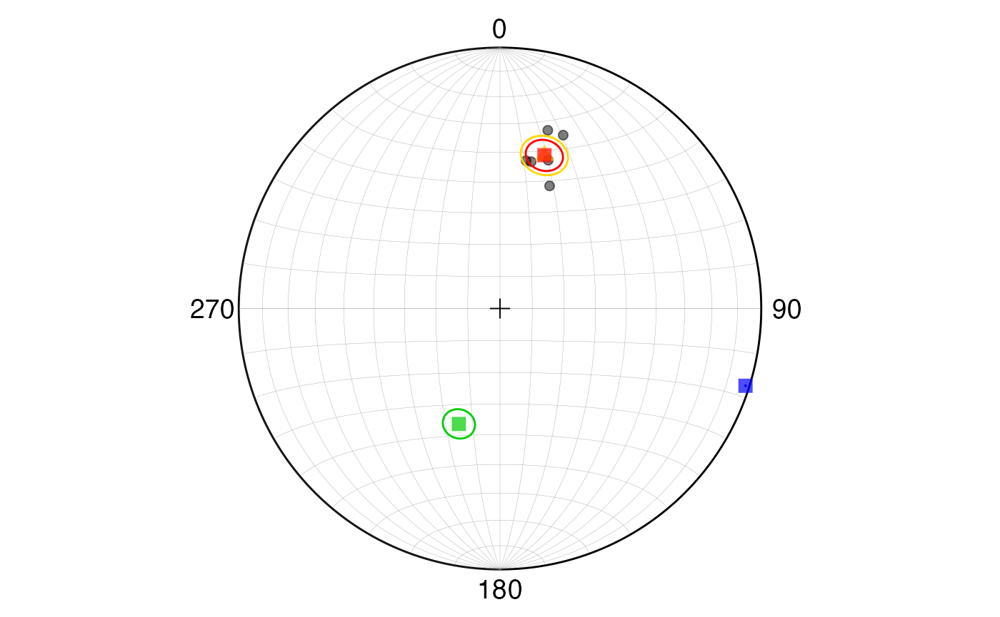
Data can be provided in a data frame, like in the following example, where the data is from a set of measurements of axial data (undirected, bi-polar) from a geological formation. The data is available in the package as a csv file:
csv_path <- system.file("spherical_data_ax_bp.csv", package = "GMisc")
df <- utils::read.csv(csv_path)
head(df)
#> dip_direction dip
#> 1 65 50
#> 2 75 53
#> 3 233 85
#> 4 39 82
#> 5 53 82
#> 6 58 66
res2 <- dir_stats_spher(
dip_direction,
dip,
data = df,
conf.level = 0.90,
type = "dir"
)
res2$axis_stats_watson
#> # A tibble: 1 × 5
#> V1_cone V2_cone V3_cone kappa_bipolar kappa_girdle
#> <dbl> <dbl> <dbl> <dbl> <dbl>
#> 1 2.93 2.30 0 12.6 -14.1
res2$stereoplot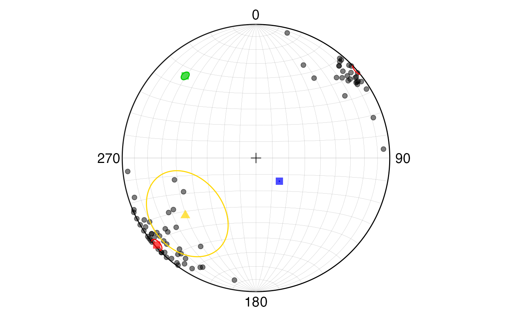
Rose diagram
For the spherical case the rose diagram function is
rose_diag_spher, with arguments similar to
dir_stats_spher and outputs several rose diagrams: for the
strike, dip direction, dip angle, trend, and plunge. By default shows
all of them but the desired output can be selected with the
show argument, selecting one or more of: “strike”, “dir”,
“dip”, “trend”, “plunge”.
dip.dir = c(12, 18, 22, 15, 10, 20)
strike = d2s(dip.dir)
dip = c(42, 40, 48, 30, 42, 30)
rose_diag_spher(
strike,
dip,
width1 = 30,
type = 'dir',
show = c("strike", "dip")
)
#> $strike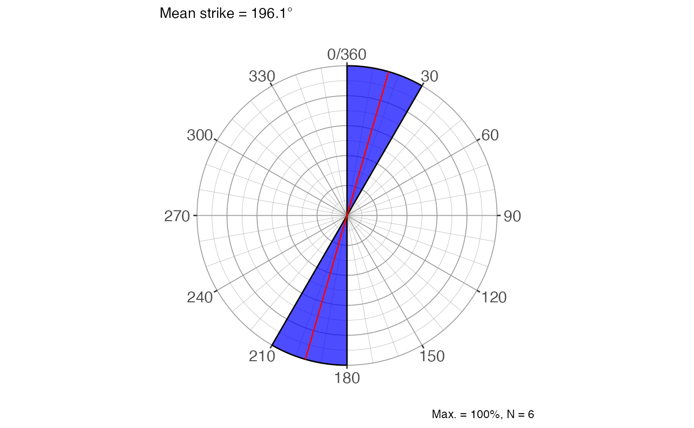
#>
#> $dip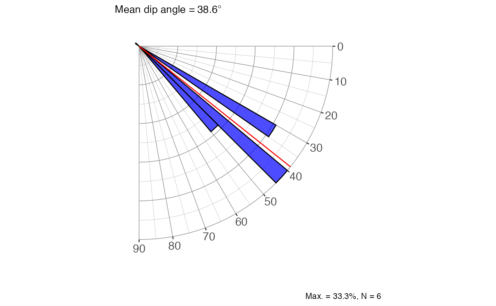
Multiple-sample test
Similar as the circular case but for two or more sets of spherical
data. There are two main functions: dir_aov_spher_vec for
the vector (directed) case, and dir_aov_spher_ax for the
axial (undirected) case, so previous knowledge of the structure of the
data must be available. In general both functions output the result of
the statistical test with its interpretation for the specific case,
group statistics, and a plot of the data in a stereonet with the mean
directions for each group, and ,if the null hypothesis is not rejected,
the common mean is also displayed.
set.seed(123)
trds <- c(runif(10, 50, 70), runif(10, 70, 90))
plgs <- c(runif(10, 20, 40), runif(10, 30, 50))
grps <- rep(c("A", "B"), each = 10)
res <- dir_aov_spher_vec(trds, plgs, grps)
res
#> $statement
#> [1] "Mean direction differs between samples"
#>
#> $vector_g
#> # A tibble: 2 × 9
#> grp N R Rbar kappa sigc trd plg cone
#> <chr> <int> <dbl> <dbl> <dbl> <dbl> <dbl> <dbl> <dbl>
#> 1 A 10 9.93 0.993 120. 0.0369 61.5 32.4 3.66
#> 2 B 10 9.90 0.990 83.5 0.0443 80.2 41.0 4.40
#>
#> $vector_res
#> # A tibble: 1 × 3
#> Nr df p.value
#> <dbl> <dbl> <dbl>
#> 1 54.0 2 1.87e-12
#>
#> $stereoplot
More functions are available from the Directional
package, including tests for randomness, uniformity, and multiple
samples, but they are not included in this vignette. For the spherical
case it needs the data in unit vectors (x, y, z) which can be obtained
from SphToCartD function.
Stereonets
This is a representation of data used typically in structural geology and other branches of geology. It can be useful to visualize the distribution of the data. It has the most use with spherical data although circular data can be plotted with a plunge/dip angle of zero.
The main function is ggstereo, which creates a blank
stereonet (by default equal area - Schmidt), and then the data can be
added with the different functions depending on the type of data and the
desired representation.
Lines
To draw lines (points, like poles) we need to get the coordinates of
the points in the stereonet, which can be obtained with the
StCoordLineD function. It tkes the trends and plunges and
outputs a data frame with the coordinates for plotting. The points can
be added to the stereonet with geom_point.
set.seed(4101)
trds <- runif(min = 30, max = 80, n = 20)
plgs <- runif(min = 10, max = 60, n = 20)
pts <- StCoordLineD(trds, plgs)
ggstereo() +
geom_point(aes(xp, yp), pts, col = 'red')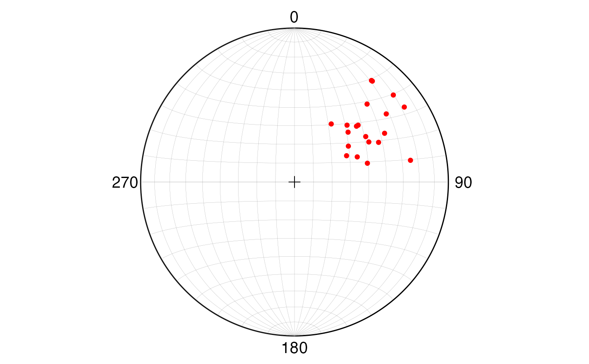
Planes (Great circles)
To draw planes (great circles) we need to get the coordinates of the
points in the stereonet, which can be obtained with the
GreatCircleD function. It takes the strike (right-hand
rule) and dip and outputs a data frame with the coordinates for
plotting. The planes can be added to the stereonet with
geom_path. The function works for 1 plane at a time, so if
more than one plane is needed it can be used with map2 and
list_rbind to get the coordinates for all the planes in a
single data frame.
strike = 240
dip = 30
plane <- GreatCircleD(strike, dip)
ggstereo() +
geom_path(aes(xp, yp), plane, col = 'steelblue')
set.seed(4101)
strike <- runif(min = 30, max = 80, n = 10)
dip <- runif(min = 40, max = 60, n = 10)
planes <- map2(strike, dip, ~ GreatCircleD(.x, .y)) |>
list_rbind(names_to = "plane_id")
ggstereo() +
geom_path(aes(xp, yp, group = plane_id), planes, col = 'steelblue')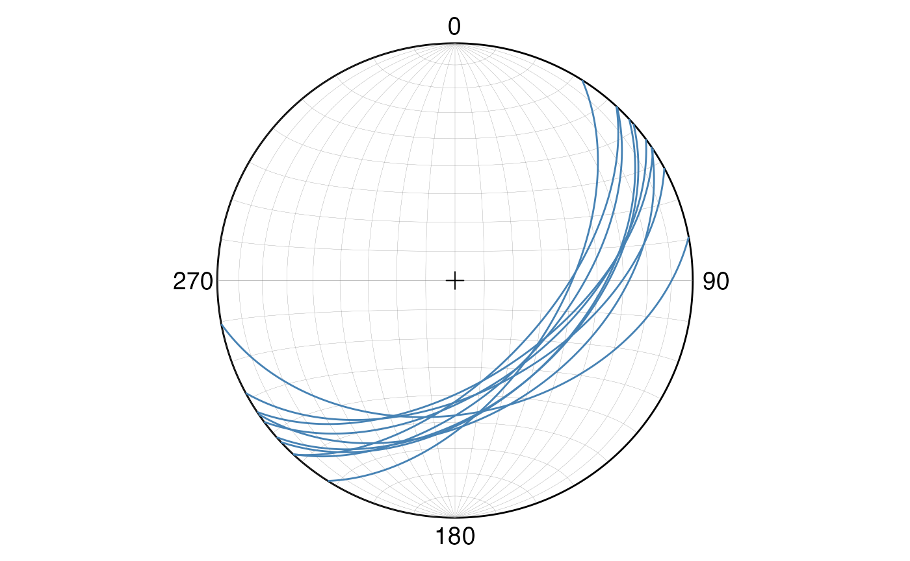
Cone angle (Small circles)
To draw small circles we need to get the coordinates of the points in
the stereonet, which can be obtained with the SmallCircleD
function. It takes the trend and plunge of the center of the small
circle, and the cone angle. Since the small circle can wrap around the
edge of the stereonet two paths are generated and they need to be
combined. The planes can be added to the stereonet with
geom_path.
pt = StCoordLineD(trd = 230, plg = 40)
sc = SmallCircleD(trda = 230, plga = 40, coneAngle = 20, closed = TRUE) |>
list_rbind(names_to = "sc_id")
ggstereo() +
geom_point(aes(xp, yp), pt, col = 'red') +
geom_path(aes(xp, yp, group = sc_id), sc, col = 'steelblue')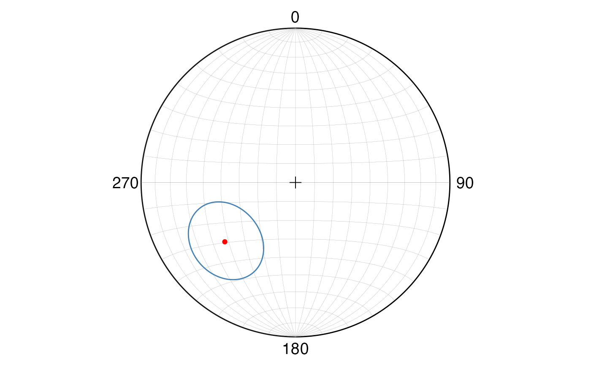
Mean plane/trend and principal stresses
The mean plane/trend and principal stresses can be obtained and
plotted directly with dir_stats_spher. From these results
the desired information can be obtained and plotted as shown before.
dirs = c(12, 18, 22, 15, 10, 20)
dips = c(42, 40, 48, 30, 42, 30)
res <- dir_stats_spher(trds, plgs, conf.level = 0.95, type = 'dir')
res$stereoplot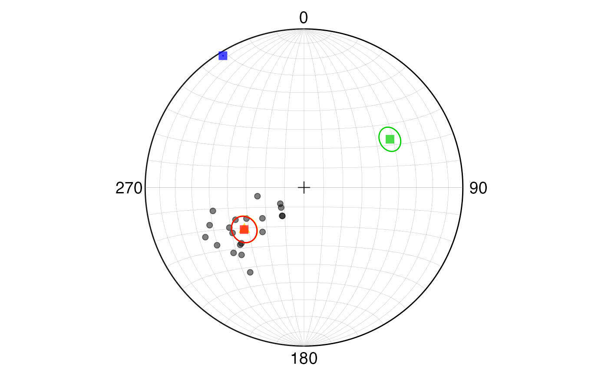
Extras
There are some extra functions that help dealing with directional data, some of which were used during the examples.
-
d2s: Converts dip direction to strike direction. -
s2d: Converts strike direction to dip direction. -
rads: Converts degrees to radians. -
degs: Converts radians to degrees. -
StCoordLineD: Converts trend and plunge to stereonet coordinates. -
GreatCircleD: Converts strike and dip to stereonet coordinates for great circles. -
SmallCircleD: Converts trend and plunge with the respective angle to stereonet coordinates for small circles. -
SphToCartD: Converts spherical coordinates to Cartesian coordinates (unit vectors). -
CartToSphD: Converts Cartesian coordinates (unit vectors) to spherical coordinates. -
Pole: Returns either the strike and dip of a plane given its pole, or the trend and plunge of a pole given its plane (right-hand rule convention), the input data must be in radians.
Shinyapp
A shinyapp using these functions can be accessed at https://maximiliano-01.shinyapps.io/directional/.